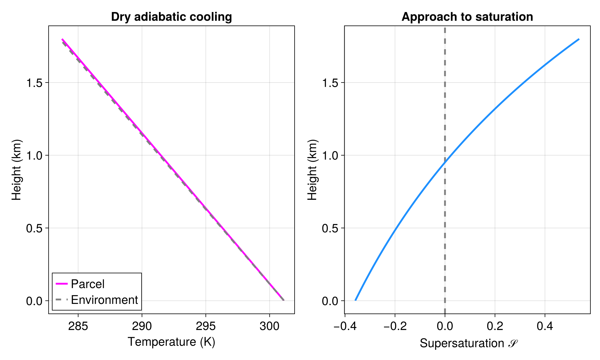
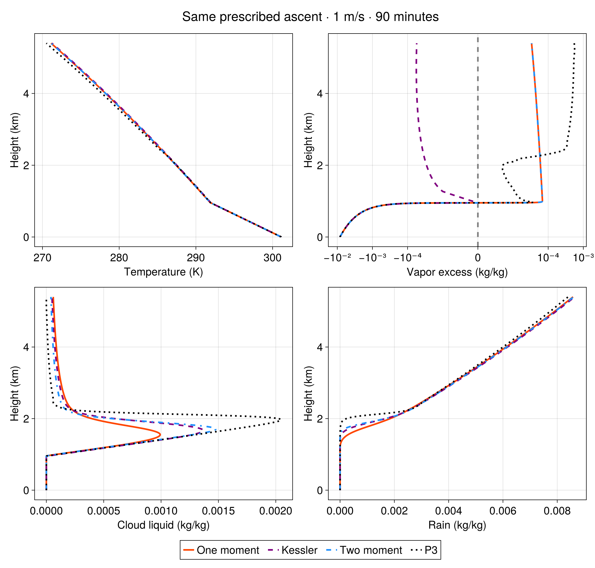
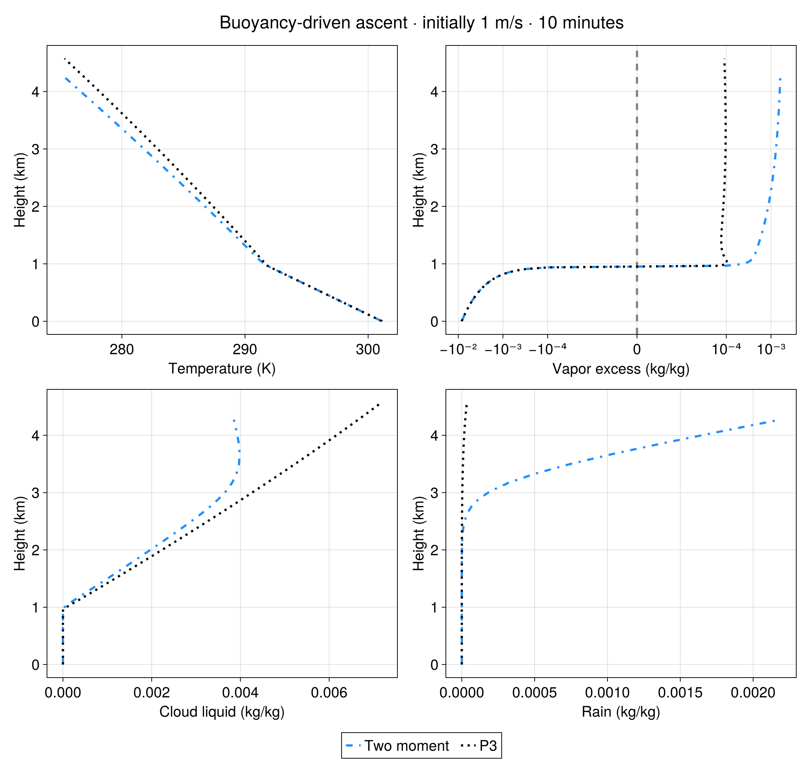
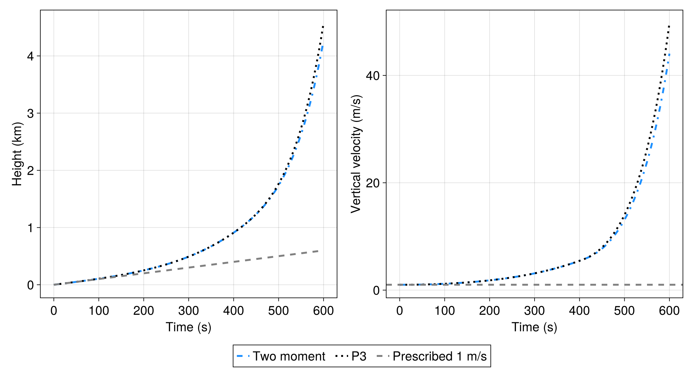
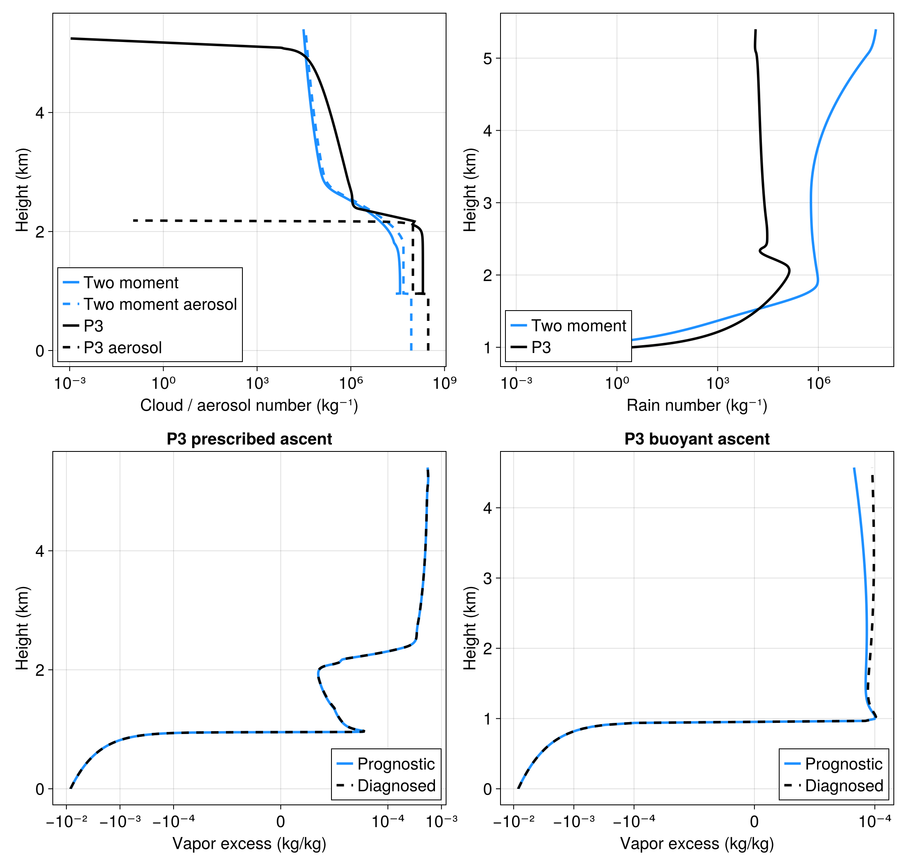

Rising dry and cloudy parcels
A rising air parcel expands and cools. Once it reaches saturation, cloud droplets form, precipitation develops, and latent heating changes the ascent. We begin with five demonstrations: dry ascent; prescribed ascent with one-moment, Kessler, and two-moment microphysics; and buoyancy-driven two-moment ascent. We then extend the comparison with prescribed and buoyant P3 parcels using a prognostic vapor excess over liquid and aerosol activation.
All seven parcels use liquid–ice potential temperature, the default formulation. It is conserved during closed adiabatic ascent; temperature responds to pressure and the evolving liquid and ice fractions. Shared plots compare schemes under the same prescribed forcing, then show their feedback on buoyancy-driven ascent.
using Oceananigansusing Oceananigans: interpolateusing Oceananigans.Unitsusing Breezeusing Breeze: DCMIP2016KesslerMicrophysics, TetensFormulausing Breeze.Microphysics.PredictedParticleProperties: AerosolActivation, AerosolModeusing CloudMicrophysicsusing CairoMakieBackground atmosphere
The grid holds environmental profiles; the parcel itself is a single moving thermodynamic state. We use a dry-adiabatic temperature profile and an environmental humidity that decreases with height. Hydrostatic pressure and density are computed consistently with that humidity, so a parcel matching its surroundings is neutrally buoyant; against a dry reference every moist parcel would be buoyant through its vapor alone. Each parcel starts at the surface with the same temperature and total water mass fraction.
grid = RectilinearGrid(size=700, z=(0, 7kilometers), topology=(Flat, Flat, Bounded))constants = ThermodynamicConstants()qᵗ₀ = 0.015 # Surface specific humidity [kg/kg]Hq = 2500 # Humidity scale height [m]qᵗ(z) = qᵗ₀ * exp(-z / Hq)qᵗ (generic function with 1 method)Recording a parcel trajectory
A shared helper initializes and runs each parcel. Snapshots copy the scalar thermodynamic and microphysical states, including P3's prognostic ρδqᵛ⁺ˡ. Unlike the dimensionless supersaturation 𝒮, the prognostic vapor excess δqᵛ⁺ˡ = qᵛ − qᵛ⁺ˡ has units of kg/kg. We initialize it consistently with the parcel's vapor and saturation mass fractions.
Parcel dynamics retains all condensate: precipitation forms but does not fall out of this closed parcel. The environmental humidity profile is not entrained.
function run_parcel(; microphysics=nothing, buoyant=false, stop_time=90minutes, Δt=1, thermodynamic_constants=constants) dynamics = if buoyant ParcelDynamics(vertical_velocity_formulation=PrognosticVerticalVelocity()) else ParcelDynamics() end model = AtmosphereModel(grid; dynamics, microphysics, formulation = :LiquidIcePotentialTemperature, thermodynamic_constants) reference_state = ReferenceState(grid, thermodynamic_constants; base_pressure = 101325, potential_temperature = 300, vapor_mass_fraction = qᵗ) # Integrate the hydrostatic profiles with the moist gas constant, so the # environmental density includes the vapor the parcels start with. compute_reference_state!(reference_state, reference_state.temperature, qᵗ, thermodynamic_constants) set!(model; qᵗ, z = 0, w = 1, w_parcel = 1, T = reference_state.temperature, p = reference_state.pressure, ρ = reference_state.density) state = model.dynamics.state if !isnothing(state.μ) && haskey(state.μ, :ρδqᵛ⁺ˡ) qᵛ⁺ˡ = saturation_specific_humidity(state.𝒰, thermodynamic_constants, PlanarLiquidSurface()) δqᵛ⁺ˡ = state.𝒰.moisture_mass_fractions.vapor - qᵛ⁺ˡ state.μ = merge(state.μ, (; ρδqᵛ⁺ˡ=state.ρ * δqᵛ⁺ˡ)) end snapshot() = (; t = model.clock.time, z = state.z, w = state.w, ρ = state.ρ, 𝒰 = state.𝒰, μ = state.μ) snapshots = typeof(snapshot())[] simulation = Simulation(model; Δt, stop_time) Oceananigans.Diagnostics.erroring_NaNChecker!(simulation) add_callback!(simulation, sim -> push!(snapshots, snapshot()), TimeInterval(5)) run!(simulation) return (; model, snapshots)endDry adiabatic ascent
With no microphysics, water remains vapor even after saturation is reached. This provides a reference for the cooling that would occur without latent heating.
dry = run_parcel(stop_time=30minutes)[ Info: Initializing simulation...
[ Info: ... simulation initialization complete (149.170 ms)
[ Info: Executing initial time step...
[ Info: ... initial time step complete (114.400 ms).
[ Info: Simulation is stopping after running for 494.571 ms.
[ Info: Simulation time 30 minutes equals or exceeds stop time 30 minutes.
Use two generous panels rather than compressing all the cases into one figure. Every figure is also saved as a vector SVG for zooming and a high-resolution PNG.
set_theme!(fontsize=20, linewidth=3)vapor_excess_ticks = ([-1e-2, -1e-3, -1e-4, 0, 1e-4, 1e-3], ["−10⁻²", "−10⁻³", "−10⁻⁴", "0", "10⁻⁴", "10⁻³"])number_ticks = (10.0 .^ (-3:3:9), ["10⁻³", "10⁰", "10³", "10⁶", "10⁹"])dry_z = [s.z / kilometers for s in dry.snapshots]dry_T = [temperature(s.𝒰, constants) for s in dry.snapshots]dry_Tₑ = [interpolate(s.z, dry.model.temperature) for s in dry.snapshots]dry_𝒮 = [s.𝒰.moisture_mass_fractions.vapor / saturation_specific_humidity(s.𝒰, constants, PlanarLiquidSurface()) - 1 for s in dry.snapshots]dry_figure = Figure(size=(1000, 600))ax = Axis(dry_figure[1, 1]; xlabel = "Temperature (K)", ylabel = "Height (km)", title = "Dry adiabatic cooling")lines!(ax, dry_T, dry_z; color=:magenta, label="Parcel")lines!(ax, dry_Tₑ, dry_z; color=:gray, linestyle=:dash, label="Environment")axislegend(ax; position=:lb)ax = Axis(dry_figure[1, 2]; xlabel = "Supersaturation 𝒮", ylabel = "Height (km)", title = "Approach to saturation")vlines!(ax, [0]; color=:gray, linestyle=:dash)lines!(ax, dry_𝒮, dry_z; color=:dodgerblue)save("rising_parcels_dry.svg", dry_figure)save("rising_parcels_dry.png", dry_figure; px_per_unit=2)
Download the dry-ascent figure as SVG.

Comparing microphysics under the same prescribed ascent
All four cloudy parcels rise at 1 m/s for 90 minutes from the same initial temperature and moisture. Their schemes differ in the processes they represent:
- One-moment microphysics predicts condensate mass with non-equilibrium cloud formation Morrison and Grabowski (2008).
- Kessler includes saturation adjustment and warm rain Kessler (1969), using the Tetens saturation formula.
- Two-moment microphysics predicts cloud/rain mass and number Seifert and Beheng (2006), with aerosol activation Abdul-Razzak and Ghan (2000).
P3Microphysicsadds evolving ice properties and, here, a prognostic vapor excess over liquid and aerosol activation. See P3: Theory.
These are comparisons of complete configurations: Kessler retains its saturation formula, and each scheme retains its default process parameters. The plotted vapor excess is diagnosed as qᵛ − qᵛ⁺ˡ in kg/kg using each model's own constants.
BreezeCloudMicrophysicsExt = Base.get_extension(Breeze, :BreezeCloudMicrophysicsExt)OneMomentCloudMicrophysics = BreezeCloudMicrophysicsExt.OneMomentCloudMicrophysicsTwoMomentCloudMicrophysics = BreezeCloudMicrophysicsExt.TwoMomentCloudMicrophysicsmicrophysics = P3Microphysics(; vapor_excess = PrognosticVaporExcess(), aerosol = AerosolActivation(AerosolMode(); prognostic=true))kessler_constants = ThermodynamicConstants(saturation_vapor_pressure=TetensFormula())one_moment = run_parcel(microphysics=OneMomentCloudMicrophysics())kessler = run_parcel(microphysics=DCMIP2016KesslerMicrophysics(), thermodynamic_constants=kessler_constants)two_moment = run_parcel(microphysics=TwoMomentCloudMicrophysics())cloudy = run_parcel(; microphysics)prescribed_cases = ((one_moment, "One moment", :orangered, :solid), (kessler, "Kessler", :purple, :dash), (two_moment, "Two moment", :dodgerblue, :dashdot), (cloudy, "P3", :black, :dot))[ Info: Initializing simulation...
[ Info: ... simulation initialization complete (457.617 ms)
[ Info: Executing initial time step...
[ Info: ... initial time step complete (177.721 ms).
[ Info: Simulation is stopping after running for 839.387 ms.
[ Info: Simulation time 1.500 hours equals or exceeds stop time 1.500 hours.
[ Info: Initializing simulation...
[ Info: ... simulation initialization complete (103.593 ms)
[ Info: Executing initial time step...
[ Info: ... initial time step complete (158.308 ms).
[ Info: Simulation is stopping after running for 348.768 ms.
[ Info: Simulation time 1.500 hours equals or exceeds stop time 1.500 hours.
[ Info: Initializing simulation...
[ Info: ... simulation initialization complete (594.813 ms)
[ Info: Executing initial time step...
[ Info: ... initial time step complete (125.850 ms).
[ Info: Simulation is stopping after running for 999.084 ms.
[ Info: Simulation time 1.500 hours equals or exceeds stop time 1.500 hours.
[ Info: Initializing simulation...
[ Info: ... simulation initialization complete (126.985 ms)
[ Info: Executing initial time step...
[ Info: ... initial time step complete (121.318 ms).
[ Info: Simulation is stopping after running for 461.247 ms.
[ Info: Simulation time 1.500 hours equals or exceeds stop time 1.500 hours.
A consistent color and line style identifies each scheme across all panels. Temperature reveals latent heating, while separate cloud and rain panels show the onset of condensation and the conversion of cloud droplets into precipitation.
function plot_parcel_comparison(cases, title) fig = Figure(size=(1100, 1050)) Label(fig[0, 1:2], title; fontsize=24) temperature_axis = Axis(fig[1, 1]; xlabel="Temperature (K)", ylabel="Height (km)") saturation_axis = Axis(fig[1, 2]; xlabel="Vapor excess (kg/kg)", ylabel="Height (km)", xscale=Makie.Symlog10(1e-5), xticks=vapor_excess_ticks) cloud_axis = Axis(fig[2, 1]; xlabel="Cloud liquid (kg/kg)", ylabel="Height (km)") rain_axis = Axis(fig[2, 2]; xlabel="Rain (kg/kg)", ylabel="Height (km)") vlines!(saturation_axis, [0]; color=:gray, linestyle=:dash) for (parcel, label, color, linestyle) in cases constants = parcel.model.thermodynamic_constants snapshots = parcel.snapshots z = [s.z / kilometers for s in snapshots] T = [temperature(s.𝒰, constants) for s in snapshots] saturation = [s.𝒰.moisture_mass_fractions.vapor - saturation_specific_humidity(s.𝒰, constants, PlanarLiquidSurface()) for s in snapshots] cloud = [s.μ.ρqᶜˡ / s.ρ for s in snapshots] rain = [s.μ.ρqʳ / s.ρ for s in snapshots] for (axis, values) in ((temperature_axis, T), (saturation_axis, saturation), (cloud_axis, cloud), (rain_axis, rain)) lines!(axis, values, z; color, linestyle, label) end end Legend(fig[3, 1:2], temperature_axis; orientation=:horizontal) return figendprescribed_figure = plot_parcel_comparison(prescribed_cases, "Same prescribed ascent · 1 m/s · 90 minutes")save("rising_parcels_prescribed_comparison.svg", prescribed_figure)save("rising_parcels_prescribed_comparison.png", prescribed_figure; px_per_unit=2)
Download the prescribed-ascent comparison as SVG.

Comparing buoyancy-driven ascent
The two-moment and P3 parcels now start at 1 m/s and evolve for 10 minutes according to dw/dt = −g(ρparcel − ρenv)/ρ_env. They share initial conditions and the buoyancy equation. As a parcel rises into drier environmental air, it becomes slightly buoyant through the vapor it carries until it saturates near 1 km; after that latent heating dominates in an environment with no stable layer to stop it, so the ascent is rapid and the histories diverge as microphysics changes parcel density. Comparing against height separates vertical structure from time; the next figure shows how long each parcel takes to reach that height.
buoyant_stop_time = 10minutesbuoyant_two_moment = run_parcel(microphysics=TwoMomentCloudMicrophysics(), buoyant=true, stop_time=buoyant_stop_time)buoyant = run_parcel(; microphysics, buoyant=true, stop_time=buoyant_stop_time)buoyant_cases = ((buoyant_two_moment, "Two moment", :dodgerblue, :dashdot), (buoyant, "P3", :black, :dot))buoyant_figure = plot_parcel_comparison(buoyant_cases, "Buoyancy-driven ascent · initially 1 m/s · $(prettytime(buoyant_stop_time))")save("rising_parcels_buoyant_comparison.svg", buoyant_figure)save("rising_parcels_buoyant_comparison.png", buoyant_figure; px_per_unit=2)[ Info: Initializing simulation...
[ Info: ... simulation initialization complete (110.583 ms)
[ Info: Executing initial time step...
[ Info: ... initial time step complete (111.835 ms).
[ Info: Simulation is stopping after running for 250.541 ms.
[ Info: Simulation time 10 minutes equals or exceeds stop time 10 minutes.
[ Info: Initializing simulation...
[ Info: ... simulation initialization complete (154.593 ms)
[ Info: Executing initial time step...
[ Info: ... initial time step complete (162.912 ms).
[ Info: Simulation is stopping after running for 349.338 ms.
[ Info: Simulation time 10 minutes equals or exceeds stop time 10 minutes.

Download the buoyant-parcel comparison as SVG.

dynamics_figure = Figure(size=(1100, 600))height_axis = Axis(dynamics_figure[1, 1]; xlabel="Time (s)", ylabel="Height (km)")velocity_axis = Axis(dynamics_figure[1, 2]; xlabel="Time (s)", ylabel="Vertical velocity (m/s)")for (parcel, label, color, linestyle) in buoyant_cases t = [s.t for s in parcel.snapshots] z = [s.z / kilometers for s in parcel.snapshots] w = [s.w for s in parcel.snapshots] lines!(height_axis, t, z; color, linestyle, label) lines!(velocity_axis, t, w; color, linestyle)endlines!(height_axis, [0, buoyant_stop_time], [0, buoyant_stop_time / kilometers]; color=:gray, linestyle=:dash, label="Prescribed 1 m/s")hlines!(velocity_axis, [1]; color=:gray, linestyle=:dash)Legend(dynamics_figure[2, 1:2], height_axis; orientation=:horizontal)save("rising_parcels_dynamics.svg", dynamics_figure)save("rising_parcels_dynamics.png", dynamics_figure; px_per_unit=2)
Download the ascent-history comparison as SVG.

Particle populations and P3 vapor excess
The prescribed two-moment and P3 parcels also predict particle numbers. Compare their cloud and rain populations directly below; dashed curves in the cloud panel show the remaining aerosol reservoir. Absent populations are omitted from logarithmic axes. These ascent comparisons emphasize liquid and rain; P3 additionally carries ice mass, number, rime, and liquid coating.
The lower panels compare P3's prognostic vapor excess with qᵛ − qᵛ⁺ˡ diagnosed from temperature and vapor, for both ascent types. The prognostic carries the adiabatic forcing of the ascent along with the phase-change sink, so it tracks the diagnosed value; the bounded adjustment of Grabowski and Morrison (2008) only corrects the residual between the two.
diagnostics_figure = Figure(size=(1100, 1050))cloud_number_axis = Axis(diagnostics_figure[1, 1]; xlabel="Cloud / aerosol number (kg⁻¹)", ylabel="Height (km)", xscale=log10, xticks=number_ticks)rain_number_axis = Axis(diagnostics_figure[1, 2]; xlabel="Rain number (kg⁻¹)", ylabel="Height (km)", xscale=log10, xticks=number_ticks)for (parcel, label, color, linestyle) in prescribed_cases[3:4] z = [s.z / kilometers for s in parcel.snapshots] for (axis, name) in ((cloud_number_axis, :ρnᶜˡ), (rain_number_axis, :ρnʳ)) n = [getproperty(s.μ, name) / s.ρ for s in parcel.snapshots] lines!(axis, [value > 1e-3 ? value : NaN for value in n], z; color, label) end aerosol = [s.μ.ρnᵃ / s.ρ for s in parcel.snapshots] lines!(cloud_number_axis, [value > 1e-3 ? value : NaN for value in aerosol], z; color, linestyle=:dash, label=label * " aerosol")endaxislegend(cloud_number_axis; position=:lb)axislegend(rain_number_axis; position=:lb)for (column, parcel, title) in ((1, cloudy, "P3 prescribed ascent"), (2, buoyant, "P3 buoyant ascent")) saturation_axis = Axis(diagnostics_figure[2, column]; xlabel="Vapor excess (kg/kg)", ylabel="Height (km)", title, xscale=Makie.Symlog10(1e-5), xticks=vapor_excess_ticks) parcel_constants = parcel.model.thermodynamic_constants z = [s.z / kilometers for s in parcel.snapshots] prognostic = [s.μ.ρδqᵛ⁺ˡ / s.ρ for s in parcel.snapshots] diagnosed = [s.𝒰.moisture_mass_fractions.vapor - saturation_specific_humidity(s.𝒰, parcel_constants, PlanarLiquidSurface()) for s in parcel.snapshots] lines!(saturation_axis, prognostic, z; color=:dodgerblue, label="Prognostic") lines!(saturation_axis, diagnosed, z; color=:black, linestyle=:dash, label="Diagnosed") axislegend(saturation_axis; position=:rb)endsave("rising_parcels_microphysics.svg", diagnostics_figure)save("rising_parcels_microphysics.png", diagnostics_figure; px_per_unit=2)
Download the particle and vapor-excess diagnostics as SVG.

Julia version and environment information
This example was executed with the following version of Julia:
using InteractiveUtils: versioninfoversioninfo()Julia Version 1.13.2
Commit 45b6d15e34b (2026-10-14 20:33 UTC)
Build Info:
Official https://julialang.org release
Platform Info:
OS: Linux (x86_64-linux-gnu)
CPU: 8 × AMD EPYC 7R13 Processor
WORD_SIZE: 64
LLVM: libLLVM-20.1.8 (ORCJIT, znver3)
GC: Built with stock GC
Threads: 1 default, 1 interactive, 5 GC (on 8 virtual cores)
Environment:
JULIA_NUM_GC_THREADS = 4,1
JULIA_GPG = 64B779A570972FFF7BFC2B54EAD471E1A1F2C10A
JULIA_LOAD_PATH = :@breeze
JULIA_PKG_SERVER_REGISTRY_PREFERENCE = eager
JULIA_VERSION = 1.13.2
JULIA_DEPOT_PATH = /usr/local/share/julia:
JULIA_PATH = /usr/local/julia
JULIA_PROJECT = @breeze
These were the top-level packages installed in the environment:
import PkgPkg.status()Status `/__w/Breeze.jl/Breeze.jl/docs/Project.toml`
[86bc3604] AtmosphericProfilesLibrary v0.1.10
[660aa2fb] Breeze v0.12.1 `.`
⌃ [052768ef] CUDA v6.2.2
[13f3f980] CairoMakie v0.15.16
⌅ [6a9e3e04] CloudMicrophysics v0.43.0
[e30172f5] Documenter v1.19.0
[daee34ce] DocumenterCitations v1.5.0
[b6400b83] DocumenterCodeBlocks v1.5.1
[1c52b33b] DocumenterLandingPage v0.2.2
[7da242da] Enzyme v0.13.216
[46192b85] GPUArraysCore v0.2.1
⌅ [63c18a36] KernelAbstractions v0.9.45
[98b081ad] Literate v2.21.0
[85f8d34a] NCDatasets v0.14.15
⌅ [cd8119b0] NumericalRadiation v0.1.3
⌅ [9e8cae18] Oceananigans v0.114.1
[a01a1ee8] RRTMGP v1.1.1
⌅ [3c362404] Reactant v0.2.300
[276daf66] SpecialFunctions v2.9.1
[b77e0a4c] InteractiveUtils v1.11.0
[44cfe95a] Pkg v1.13.0
[9a3f8284] Random v1.11.0
Info Packages marked with ⌃ and ⌅ have new versions available. Those with ⌃ may be upgradable, but those with ⌅ are restricted by compatibility constraints from upgrading. To see why use `status --outdated`
This page was generated using Literate.jl.